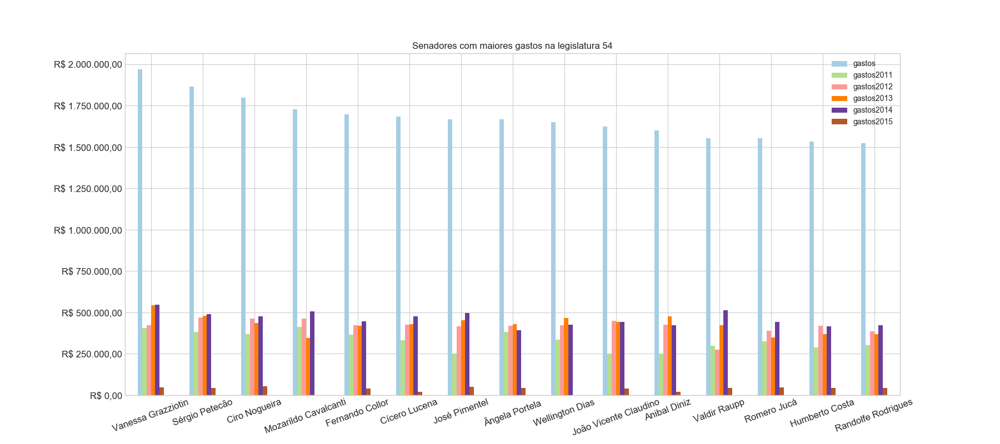
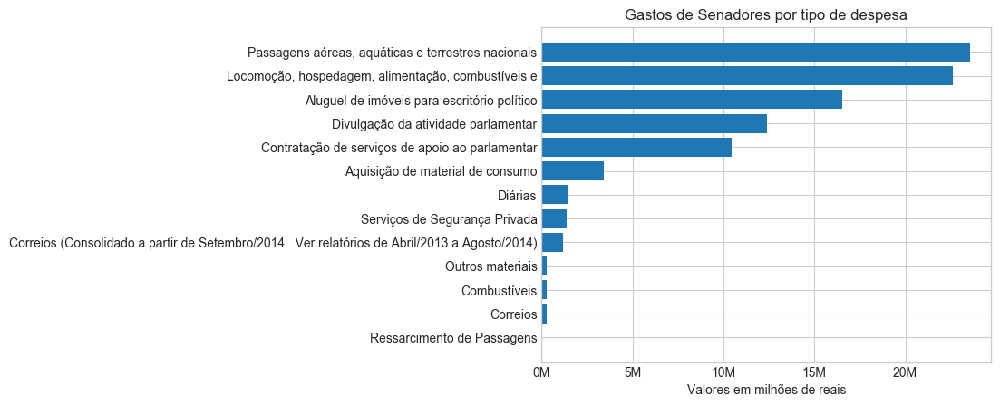
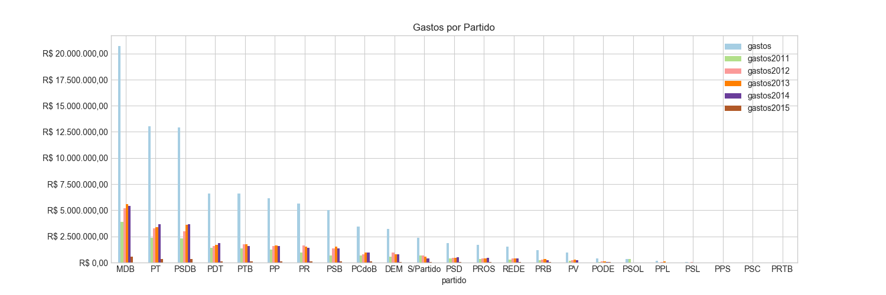
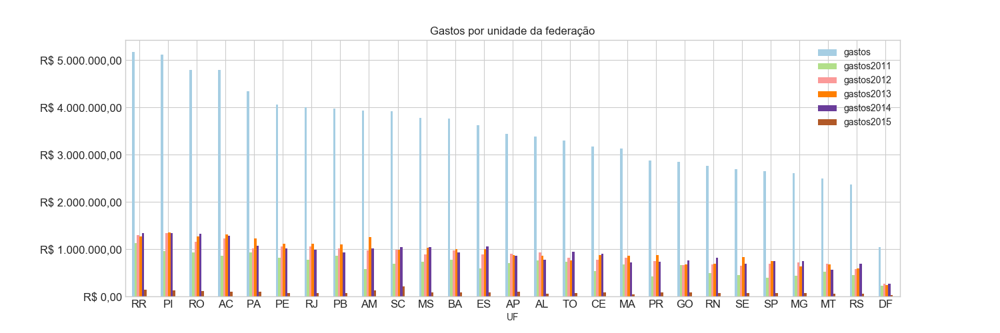

BRASIL - 54ª Legislatura
Informações de despesas de senadores
Dados coletados em
15/06/2018 às
17:32:08




 podem ser reordenadas com um clique. As despesas de um senador são detalhadas quando se passa o mouse sobre o montante.
podem ser reordenadas com um clique. As despesas de um senador são detalhadas quando se passa o mouse sobre o montante.| Nº | Foto | Nome |
Despesas no Mandato |
Participação |
UF |
Partido |
Escritório e Gabinete |
Benefício Moradia |
|---|---|---|---|---|---|---|---|---|
| 1 | Aécio Neves | R$ 958.582,25 | Titular | MG | PSDB | 24 pessoas | 19.75 meses | |
| 2 | Airton Sandoval | R$ 0,00 | 1º Suplente | SP | MDB | 0 pessoas | 0.0 meses | |
| 3 | Ana Amélia | R$ 549.532,64 | Titular | RS | PP | 22 pessoas | 0.0 meses | |
| 4 | Ângela Portela | R$ 1.633.522,47 | Titular | RR | PDT | 33 pessoas | 24.0 meses | |
| 5 | Antonio Carlos Valadares | R$ 1.060.379,53 | Titular | SE | PSB | 41 pessoas | 20.0 meses | |
| 6 | Armando Monteiro | R$ 1.199.213,96 | Titular | PE | PTB | 0 pessoas | 20.0 meses | |
| 7 | Ataídes Oliveira | R$ 567.388,29 | 1º Suplente | TO | PSDB | 25 pessoas | 19.0 meses | |
| 8 | Crédito foto: Cléber Medeiros/Supres | Benedito de Lira | R$ 763.738,10 | Titular | AL | PP | 57 pessoas | 20.0 meses |
| 9 | Cássio Cunha Lima | R$ 705.592,25 | Titular | PB | PSDB | 57 pessoas | 25.0 meses | |
| 10 | Ciro Nogueira | R$ 1.765.482,63 | Titular | PI | PP | 48 pessoas | 24.0 meses | |
| 11 | Cristovam Buarque | R$ 12.373,43 | Titular | DF | PPS | 25 pessoas | 0.0 meses | |
| 12 | Dalirio Beber | R$ 12.264,02 | 1º Suplente | SC | PSDB | 21 pessoas | 0.58 meses | |
| 13 | Crédito foto: Senado Federal | Edison Lobão | R$ 29.193,34 | Titular | MA | MDB | 44 pessoas | 0.0 meses |
| 14 | Eduardo Amorim | R$ 925.024,78 | Titular | SE | PSDB | 46 pessoas | 24.0 meses | |
| 15 | Eduardo Braga | R$ 987.893,44 | Titular | AM | MDB | 0 pessoas | 0.08 meses | |
| 16 | Eduardo Lopes | R$ 700.666,11 | 1º Suplente | RJ | PRB | 0 pessoas | 14.0 meses | |
| 17 | Eunício Oliveira | R$ 8.612,54 | Titular | CE | MDB | 31 pessoas | 0.0 meses | |
| 18 | Flexa Ribeiro | R$ 1.428.969,75 | Titular | PA | PSDB | 28 pessoas | 24.08 meses | |
| 19 | Garibaldi Alves Filho | R$ 22.647,13 | Titular | RN | MDB | 39 pessoas | 20.0 meses | |
| 20 | Gleisi Hoffmann | R$ 341.581,14 | Titular | PR | PT | 40 pessoas | 11.0 meses | |
| 21 | Hélio José | R$ 20.279,63 | 1º Suplente | DF | PROS | 79 pessoas | 0.0 meses | |
| 22 | Crédito foto: Cléber Medeiros/Supres | Humberto Costa | R$ 1.509.280,43 | Titular | PE | PT | 34 pessoas | 20.0 meses |
| 23 | Crédito foto: Senado Federal | Jader Barbalho | R$ 1.193.278,31 | Titular | PA | MDB | 23 pessoas | 20.0 meses |
| 24 | João Alberto Souza | R$ 1.112.945,01 | Titular | MA | MDB | 74 pessoas | 20.0 meses | |
| 25 | João Capiberibe | R$ 1.448.920,22 | Titular | AP | PSB | 59 pessoas | 20.0 meses | |
| 26 | Jorge Viana | R$ 1.300.204,25 | Titular | AC | PT | 25 pessoas | 20.0 meses | |
| 27 | José Agripino | R$ 1.157.809,07 | Titular | RN | DEM | 42 pessoas | 24.0 meses | |
| 28 | Crédito foto: Senado Federal | José Medeiros | R$ 37.204,95 | 1º Suplente | MT | PODE | 33 pessoas | 0.83 meses |
| 29 | José Pimentel | R$ 1.644.919,30 | Titular | CE | PT | 31 pessoas | 20.0 meses | |
| 30 | Lídice da Mata | R$ 1.449.249,58 | Titular | BA | PSB | 52 pessoas | 20.0 meses | |
| 31 | Lindbergh Farias | R$ 1.390.833,68 | Titular | RJ | PT | 31 pessoas | 24.0 meses | |
| 32 | Lúcia Vânia | R$ 1.031.870,11 | Titular | GO | PSB | 25 pessoas | 20.0 meses | |
| 33 | Magno Malta | R$ 1.350.379,01 | Titular | ES | PR | 48 pessoas | 24.0 meses | |
| 34 | Crédito foto: Senado Federal | Marta Suplicy | R$ 332.143,43 | Titular | SP | MDB | 28 pessoas | 2.0 meses |
| 35 | Paulo Bauer | R$ 1.290.932,06 | Titular | SC | PSDB | 27 pessoas | 20.0 meses | |
| 36 | Crédito foto: Cléber Medeiros/Supres | Paulo Paim | R$ 1.476.741,61 | Titular | RS | PT | 32 pessoas | 24.0 meses |
| 37 | Pedro Chaves | R$ 0,00 | 1º Suplente | MS | PRB | 0 pessoas | 0.0 meses | |
| 38 | Raimundo Lira | R$ 12.192,13 | 1º Suplente | PB | PSD | 26 pessoas | 0.0 meses | |
| 39 | Randolfe Rodrigues | R$ 1.496.878,85 | Titular | AP | REDE | 37 pessoas | 21.0 meses | |
| 40 | Crédito foto: Senado Federal | Reditario Cassol | R$ 122.035,86 | 1º Suplente | RO | PP | 0 pessoas | 0.0 meses |
| 41 | Regina Sousa | R$ 39.312,96 | 1º Suplente | PI | PT | 29 pessoas | 0.92 meses | |
| 42 | Renan Calheiros | R$ 900.938,44 | Titular | AL | MDB | 41 pessoas | 24.0 meses | |
| 43 | Crédito foto: Senado Federal | Ricardo Ferraço | R$ 1.023.647,70 | Titular | ES | PSDB | 26 pessoas | 1.75 meses |
| 44 | Roberto Muniz | R$ 0,00 | 1º Suplente | BA | PP | 0 pessoas | 0.0 meses | |
| 45 | Roberto Requião | R$ 1.342.244,83 | Titular | PR | MDB | 29 pessoas | 20.0 meses | |
| 46 | Crédito foto: Senado Federal | Rodrigues Palma | R$ 0,00 | 2º Suplente | MT | PR | 0 pessoas | 0.0 meses |
| 47 | Romero Jucá | R$ 1.551.756,59 | Titular | RR | MDB | 40 pessoas | 24.0 meses | |
| 48 | Crédito foto: Cléber Medeiros/Supres | Sérgio Petecão | R$ 1.830.934,68 | Titular | AC | PSD | 39 pessoas | 20.0 meses |
| 49 | Valdir Raupp | R$ 1.552.406,17 | Titular | RO | MDB | 59 pessoas | 0.0 meses | |
| 50 | Vanessa Grazziotin | R$ 1.933.410,01 | Titular | AM | PCdoB | 55 pessoas | 20.0 meses | |
| 51 | Vicentinho Alves | R$ 1.049.510,06 | Titular | TO | PR | 53 pessoas | 20.0 meses | |
| 52 | Waldemir Moka | R$ 1.424.695,52 | Titular | MS | MDB | 29 pessoas | 20.0 meses | |
| 53 | Wilder Morais | R$ 408.014,21 | 1º Suplente | GO | DEM | 33 pessoas | 17.0 meses | |
| 54 | Zeze Perrella | R$ 1.095.282,52 | 1º Suplente | MG | MDB | 53 pessoas | 22.0 meses |
| Nº | Foto | Nome |
Despesas no Mandato |
Participação |
UF |
Partido |
Escritório e Gabinete |
Benefício Moradia |
|---|---|---|---|---|---|---|---|---|
| 1 | Crédito foto: Cléber Medeiros/Supres | Acir Gurgacz | R$ 1.425.762,72 | Titular | RO | PDT | 44 pessoas | 19.08 meses |
| 2 | Crédito foto: A definir | Ada Mello | R$ 0,00 | 2º Suplente | AL | PTB | 0 pessoas | 0.0 meses |
| 3 | Crédito foto: A definir | Alfredo Nascimento | R$ 841.364,56 | Titular | AM | PR | 0 pessoas | 23.17 meses |
| 4 | Crédito foto: Senado Federal | Aloysio Nunes Ferreira | R$ 987.096,99 | Titular | SP | PSDB | 25 pessoas | 20.0 meses |
| 5 | Alvaro Dias | R$ 349.088,65 | Titular | PR | PODE | 29 pessoas | 0.0 meses | |
| 6 | Crédito foto: A definir | Ana Rita | R$ 1.184.036,78 | 1º Suplente | ES | PT | 0 pessoas | 23.17 meses |
| 7 | Anibal Diniz | R$ 1.579.236,11 | 1º Suplente | AC | PT | 0 pessoas | 19.17 meses | |
| 8 | Crédito foto: A definir | Antonio Aureliano | R$ 96.166,92 | 2º Suplente | MG | PSDB | 0 pessoas | 4.08 meses |
| 9 | Antonio Carlos Rodrigues | R$ 612.508,55 | 1º Suplente | SP | PR | 0 pessoas | 0.0 meses | |
| 10 | Crédito foto: A definir | Antonio Russo | R$ 410.119,14 | 1º Suplente | MS | PR | 0 pessoas | 0.0 meses |
| 11 | Assis Gurgacz | R$ 129.850,41 | 1º Suplente | RO | PDT | 0 pessoas | 0.0 meses | |
| 12 | Blairo Maggi | R$ 580.829,30 | Titular | MT | PR | 27 pessoas | 20.0 meses | |
| 13 | Carlos Dunga | R$ 0,00 | 1º Suplente | PB | PTB | 0 pessoas | 0.0 meses | |
| 14 | Casildo Maldaner | R$ 1.204.644,92 | 1º Suplente | SC | MDB | 0 pessoas | 23.17 meses | |
| 15 | Cícero Lucena | R$ 1.665.446,42 | Titular | PB | PSDB | 0 pessoas | 20.08 meses | |
| 16 | Crédito foto: Rodrigo Viana/Supres | Cidinho Santos | R$ 147.220,69 | 1º Suplente | MT | PR | 0 pessoas | 4.0 meses |
| 17 | Crédito foto: A definir | Clésio Andrade | R$ 414.028,90 | 1º Suplente | MG | MDB | 0 pessoas | 14.0 meses |
| 18 | Crédito foto: Senado Federal | Clovis Fecury | R$ 335.277,44 | 1º Suplente | MA | DEM | 0 pessoas | 0.0 meses |
| 19 | Cyro Miranda | R$ 995.529,35 | 1º Suplente | GO | PSDB | 0 pessoas | 19.08 meses | |
| 20 | Deca | R$ 0,00 | 1º Suplente | PB | PSDB | 0 pessoas | 0.0 meses | |
| 21 | Delcídio do Amaral | R$ 1.104.409,64 | Titular | MS | S/Partido | 31 pessoas | 24.0 meses | |
| 22 | Demóstenes Torres | R$ 330.912,13 | Titular | GO | S/Partido | 0 pessoas | 0.0 meses | |
| 23 | Douglas Cintra | R$ 69.218,55 | 1º Suplente | PE | PTB | 44 pessoas | 4.92 meses | |
| 24 | Eduardo Suplicy | R$ 672.370,16 | Titular | SP | PT | 0 pessoas | 19.08 meses | |
| 25 | Elber Batalha | R$ 0,00 | 2º Suplente | SE | PSB | 0 pessoas | 0.0 meses | |
| 26 | Eliseu Resende | R$ 0,00 | Titular | MG | DEM | 0 pessoas | 0.0 meses | |
| 27 | Epitácio Cafeteira | R$ 702.915,31 | Titular | MA | PTB | 0 pessoas | 23.17 meses | |
| 28 | Crédito foto: A definir | Euclydes Mello | R$ 0,00 | 1º Suplente | AL | PRB | 0 pessoas | 0.0 meses |
| 29 | Expedito Júnior | R$ 0,00 | Titular | RO | PSDB | 0 pessoas | 0.0 meses | |
| 30 | Fernando Collor | R$ 1.695.842,84 | Titular | AL | PTC | 77 pessoas | 20.0 meses | |
| 31 | Fernando Ribeiro | R$ 2.815,86 | 1º Suplente | PA | MDB | 0 pessoas | 0.0 meses | |
| 32 | Fleury | R$ 48.209,73 | 2º Suplente | GO | DEM | 0 pessoas | 3.0 meses | |
| 33 | Crédito foto: A definir | Francisco Dornelles | R$ 1.405.302,73 | Titular | RJ | PP | 0 pessoas | 19.0 meses |
| 34 | Crédito foto: A definir | Garibaldi Alves | R$ 324.327,42 | 1º Suplente | RN | MDB | 0 pessoas | 19.0 meses |
| 35 | Geovani Borges | R$ 288.778,80 | 1º Suplente | AP | MDB | 0 pessoas | 0.0 meses | |
| 36 | Gilvam Borges | R$ 41.002,50 | Titular | AP | MDB | 0 pessoas | 0.0 meses | |
| 37 | Inácio Arruda | R$ 1.461.313,29 | Titular | CE | PCdoB | 0 pessoas | 23.17 meses | |
| 38 | Crédito foto: Senado Federal | Itamar Franco | R$ 0,00 | Titular | MG | S/Partido | 0 pessoas | 0.0 meses |
| 39 | Crédito foto: Cléber Medeiros/Supres | Ivo Cassol | R$ 1.355.999,67 | Titular | RO | PP | 64 pessoas | 17.0 meses |
| 40 | Crédito foto: A definir | Ivonete Dantas | R$ 278.655,29 | 2º Suplente | RN | MDB | 0 pessoas | 9.08 meses |
| 41 | Jarbas Vasconcelos | R$ 1.225.038,39 | Titular | PE | MDB | 0 pessoas | 19.08 meses | |
| 42 | Crédito foto: A definir | Jayme Campos | R$ 756.406,10 | Titular | MT | DEM | 0 pessoas | 17.08 meses |
| 43 | Crédito foto: Senado Federal | João Costa | R$ 146.349,21 | 1º Suplente | TO | PPL | 0 pessoas | 0.0 meses |
| 44 | Crédito foto: A definir | João Durval | R$ 1.323.634,24 | Titular | BA | PDT | 0 pessoas | 19.08 meses |
| 45 | Crédito foto: A definir | João Pedro | R$ 59.856,73 | 1º Suplente | AM | PT | 0 pessoas | 0.0 meses |
| 46 | Crédito foto: Cléber Medeiros/Supres | João Ribeiro | R$ 477.212,40 | Titular | TO | PR | 0 pessoas | 7.0 meses |
| 47 | Crédito foto: A definir | João Vicente Claudino | R$ 1.587.575,37 | Titular | PI | PTB | 0 pessoas | 19.08 meses |
| 48 | Joaquim Roriz | R$ 0,00 | Titular | DF | MDB | 0 pessoas | 0.0 meses | |
| 49 | Jorge Afonso Argello | R$ 969.495,06 | 1º Suplente | DF | PTB | 0 pessoas | 0.0 meses | |
| 50 | Crédito foto: A definir | José Sarney | R$ 126.731,79 | Titular | AP | MDB | 0 pessoas | 2.0 meses |
| 51 | Kaká Andrade | R$ 119.549,78 | 2º Suplente | SE | PDT | 0 pessoas | 4.0 meses | |
| 52 | Kátia Abreu | R$ 984.876,15 | Titular | TO | PDT | 0 pessoas | 19.08 meses | |
| 53 | Lauro Antonio | R$ 87.646,88 | 1º Suplente | SE | PR | 0 pessoas | 0.0 meses | |
| 54 | Lobão Filho | R$ 932.445,31 | 1º Suplente | MA | MDB | 0 pessoas | 23.0 meses | |
| 55 | Luiz Henrique | R$ 1.217.926,39 | Titular | SC | MDB | 0 pessoas | 19.33 meses | |
| 56 | Marcelo Crivella | R$ 481.092,85 | Titular | RJ | PRB | 40 pessoas | 11.0 meses | |
| 57 | Marco Antonio | R$ 39.899,28 | 1º Suplente | TO | PSL | 0 pessoas | 0.0 meses | |
| 58 | Marconi Perillo | R$ 0,00 | Titular | GO | PSDB | 0 pessoas | 0.0 meses | |
| 59 | Maria do Carmo Alves | R$ 480.500,01 | Titular | SE | DEM | 0 pessoas | 19.08 meses | |
| 60 | Crédito foto: Senado Federal | Marinor Brito | R$ 308.140,09 | Titular | PA | PSOL | 0 pessoas | 0.0 meses |
| 61 | Crédito foto: A definir | Mário Couto | R$ 1.340.108,54 | Titular | PA | PSDB | 0 pessoas | 19.08 meses |
| 62 | Marisa Serrano | R$ 85.217,02 | Titular | MS | PSDB | 0 pessoas | 0.0 meses | |
| 63 | Mozarildo Cavalcanti | R$ 1.727.883,80 | Titular | RR | PTB | 0 pessoas | 23.17 meses | |
| 64 | Níura Demarchi | R$ 0,00 | 2º Suplente | SC | PSDB | 0 pessoas | 0.0 meses | |
| 65 | Odacir Soares | R$ 123.685,36 | 2º Suplente | RO | PP | 0 pessoas | 3.0 meses | |
| 66 | Crédito foto: A definir | Osvaldo Sobrinho | R$ 37.566,32 | 2º Suplente | MT | PTB | 0 pessoas | 4.0 meses |
| 67 | Pastor Bel | R$ 0,00 | 2º Suplente | MA | PRTB | 0 pessoas | 0.0 meses | |
| 68 | Paulo Davim | R$ 926.553,52 | 1º Suplente | RN | PV | 0 pessoas | 23.0 meses | |
| 69 | Crédito foto: A definir | Pedro Simon | R$ 322.613,77 | Titular | RS | MDB | 0 pessoas | 19.08 meses |
| 70 | Pedro Taques | R$ 910.448,51 | Titular | MT | PDT | 0 pessoas | 19.0 meses | |
| 71 | Pericles Olivier | R$ 0,00 | 1º Suplente | RJ | PP | 0 pessoas | 0.0 meses | |
| 72 | Crédito foto: A definir | Raimundo Colombo | R$ 0,00 | Titular | SC | DEM | 0 pessoas | 0.0 meses |
| 73 | Renato Casagrande | R$ 0,00 | Titular | ES | PSB | 0 pessoas | 0.0 meses | |
| 74 | Rodrigo Rollemberg | R$ 27.546,56 | Titular | DF | PSB | 0 pessoas | 0.0 meses | |
| 75 | Crédito foto: A definir | Rosalba Ciarlini | R$ 0,00 | Titular | RN | DEM | 0 pessoas | 0.0 meses |
| 76 | Ruben Figueiró | R$ 681.128,68 | 2º Suplente | MS | PSDB | 0 pessoas | 19.08 meses | |
| 77 | Sandra Braga | R$ 34.398,97 | 1º Suplente | AM | MDB | 30 pessoas | 1.0 mês | |
| 78 | Crédito foto: Senado Federal | Sérgio de Castro | R$ 0,00 | 1º Suplente | ES | PDT | 0 pessoas | 0.0 meses |
| 79 | Crédito foto: Senado Federal | Sergio Souza | R$ 812.947,59 | 1º Suplente | PR | MDB | 0 pessoas | 19.0 meses |
| 80 | Sodré Santoro | R$ 170.521,17 | 1º Suplente | RR | PTB | 0 pessoas | 3.0 meses | |
| 81 | Crédito foto: A definir | Tião Viana | R$ 0,00 | Titular | AC | PT | 0 pessoas | 0.0 meses |
| 82 | Crédito foto: Senado Federal | Tomás Correia | R$ 44.422,84 | 1º Suplente | RO | MDB | 0 pessoas | 0.0 meses |
| 83 | Virginio de Carvalho | R$ 0,00 | 1º Suplente | SE | PSC | 0 pessoas | 0.0 meses | |
| 84 | Crédito foto: Cléber Medeiros/Supres | Vital do Rêgo | R$ 1.256.957,83 | Titular | PB | MDB | 0 pessoas | 19.0 meses |
| 85 | Crédito foto: Pedro França/Agência Senado | Walter Pinheiro | R$ 920.594,11 | Titular | BA | S/Partido | 32 pessoas | 17.83 meses |
| 86 | Crédito foto: Cléber Medeiros/Supres | Wellington Dias | R$ 1.620.298,76 | Titular | PI | PT | 0 pessoas | 19.0 meses |
| 87 | Wilson Matos | R$ 6.199,20 | 1º Suplente | PR | PSDB | 0 pessoas | 0.0 meses | |
| 88 | Crédito foto: Cléber Medeiros/Supres | Wilson Santiago | R$ 259.195,08 | Titular | PB | MDB | 0 pessoas | 0.0 meses |
| 89 | Wirlande da Luz | R$ 0,00 | 1º Suplente | RR | MDB | 0 pessoas | 0.0 meses |